Session 2: Large Language Models
How Do LLMs Predict Text?
Large language models predict text the same way a human reader instinctively completes “It was the best of times, it was the ___“: by learning statistical regularities from massive amounts of training data. This is possible because computers represent language numerically, allowing patterns to be learned and predictions to be calculated mathematically.

Language Models Are Not Minds
As emphasized in this New Yorker article, language models are not sentient minds but mathematical systems that generate text by selecting the most statistically probable next word. They simulate understanding by reflecting patterns learned from enormous amounts of human writing, without possessing genuine comprehension.

Visualizing Probabilistic Text Generation
This visualization shows LLM text generation in action: at each step, the model evaluates many possible next words, assigns probabilities, selects one, and repeats the process word by word. What appears to us as a coherent thought is actually the result of many sequential probability decisions, with fluent language emerging from mathematics, not intention or awareness.

Everything a Computer Processes Is a Number
A foundational truth of computing is that every piece of information a computer processes - color, sound, image, motion, and language - must first be represented as a number. Whether editing a photo, streaming video, or processing text, the underlying process is always the same: numbers representing numbers representing the world.
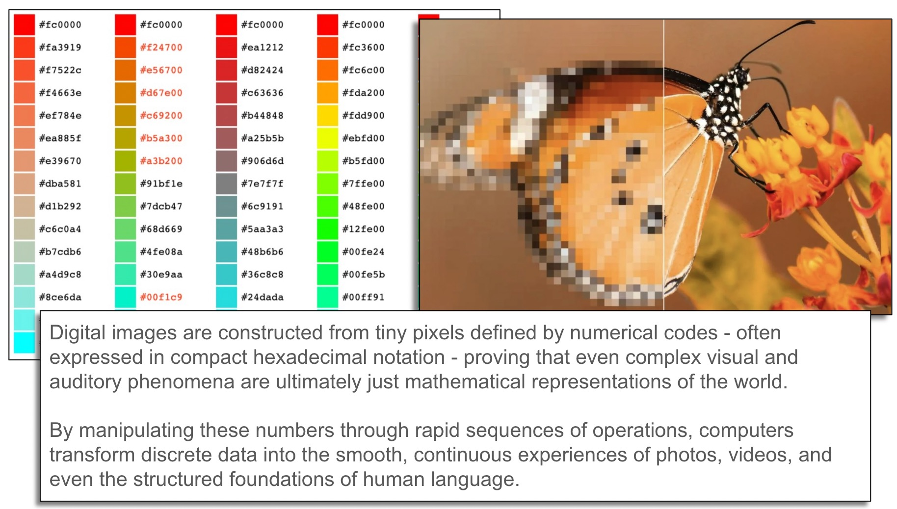
Words, Sentences, and Paragraphs as Numbers
Language models map words into a mathematical space using coordinates, similar to the X/Y axis graphing done in high school math - but in dimensions far beyond our simple two-dimensional understanding. This numerical representation of language is what allows models to compute statistical patterns and make predictions about what word is likely to come next.

Word Embeddings: Distance as Meaning
When words are converted into numbers and plotted in a mathematical space, their distances from one another reflect semantic relationships - “dog” and “puppy” cluster together, while “airplane” lands far away. Distance in this space becomes a stand-in for similarity, allowing models to detect relationships among words purely through geometry.
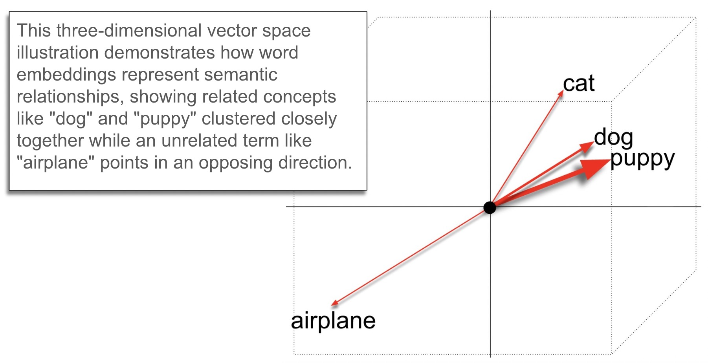
Embeddings Extended to Sentences and Paragraphs
Word embeddings extend beyond individual words to sentences and paragraphs, allowing models to capture richer and more complex linguistic relationships across longer stretches of language. Once words are placed in mathematical space, consistent patterns of difference between words appear as measurable “directions,” giving structure to language itself.
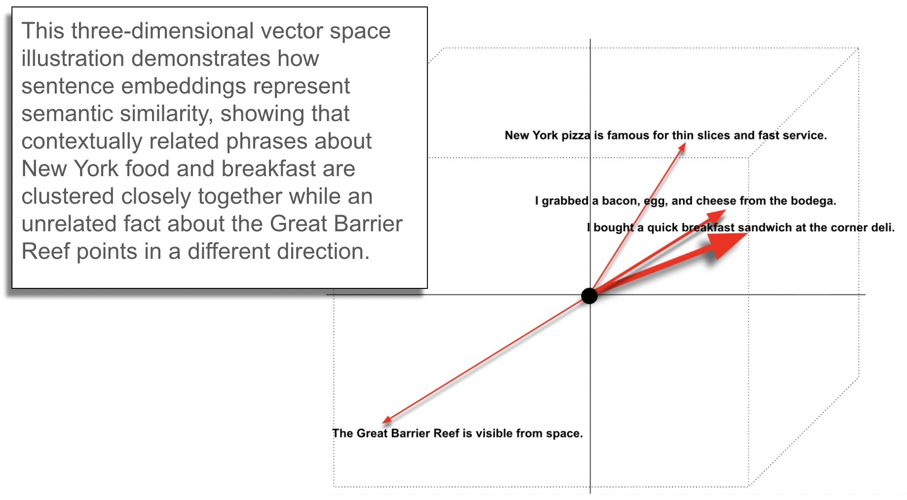
The King–Queen Illustration
Math educator Grant Sanderson (3Blue1Brown) illustrates a remarkable property of embedding spaces: the mathematical “step” from man to woman mirrors the step from king to queen, expressed as E(queen) ≈ E(king) + E(woman) − E(man). This shows that from statistical patterns alone, models can learn stable mathematical transformations that correspond to concepts we recognize as meaningful.

Self-Attention and the Transformer Architecture
The Transformer architecture, introduced in 2017, solved a critical limitation of earlier sequential language models by introducing “self-attention” - a mechanism that allows each word to simultaneously consider all other words in the sentence at once. This replaced slow, step-by-step processing with a web of parallel connections, dramatically improving both speed and contextual understanding.

The Trophy–Suitcase Problem
The sentence “The trophy doesn’t fit in the brown suitcase because it is too small” illustrates why self-attention matters: correctly identifying what “it” refers to requires connecting words that are far apart in the sentence. Self-attention solves this by allowing every word to directly compare and link with any other word, regardless of distance, creating a web of relationships across the entire sentence.

The GPU: Hardware That Made It Possible
The Transformer architecture became practical because of advances in GPU (graphics processing unit) hardware - chips originally designed for video game graphics that excel at performing many calculations simultaneously. Unlike traditional CPUs, GPUs can handle the massively parallel computations required by self-attention at the scale and speed that modern AI demands.
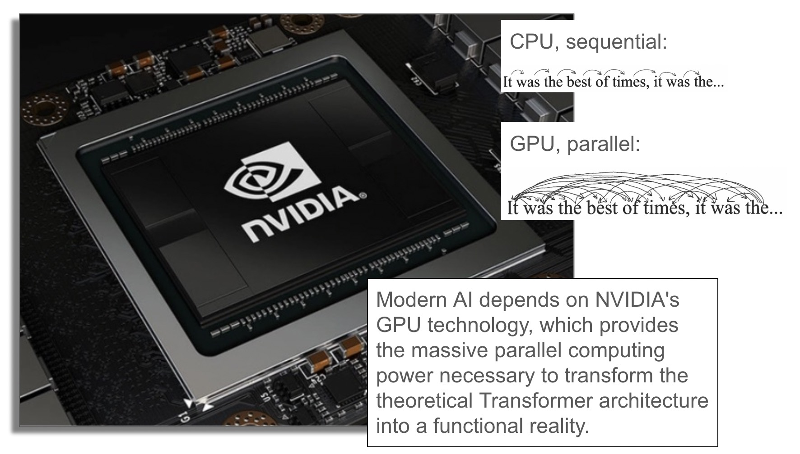
Nvidia’s Rise and the AI Hardware Boom
Nvidia’s dramatic stock growth offers a striking financial indicator of just how central GPU hardware has become to the modern AI ecosystem. As demand for AI computation has surged, Nvidia—the leading manufacturer of GPU chips used in large-scale deep learning - has experienced one of the most dramatic Wall Street runs of any major tech company.
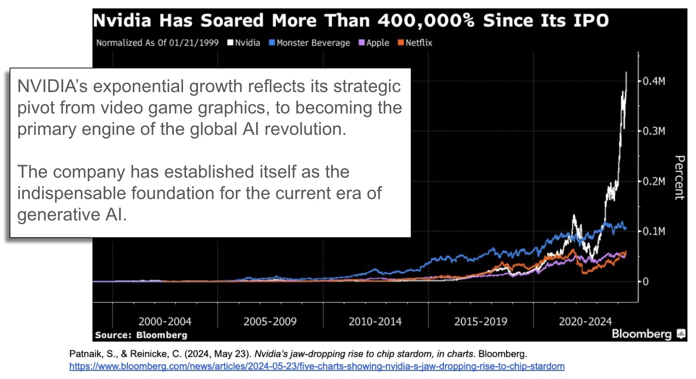
Putting It Together: Words as Numbers and the Transformer
Embeddings turn words into numbers placed in a mathematical space where distance reflects similarity, while self-attention allows the model to interpret words in context by building a web of relationships across the full sentence. Together, these two ingredients raise an essential question: how does the model learn these structures in the first place - and the answer is training.

Training Large Language Models
Training is the long, expensive process by which a language model is exposed to enormous amounts of text and repeatedly practices one task: guessing what comes next in a sequence, then adjusting itself based on whether the guess was correct. This happens not once or a handful of times, but billions and billions of times, making the model extremely adept at predicting statistically plausible language.

The Corpus: What the Model Trains On
The vast collection of text an LLM trains on is called a corpus, typically drawn from books, Wikipedia, news articles, websites, and other publicly available writing. A model can only learn from what it has been exposed to, meaning the strengths and weaknesses of any LLM are deeply tied to what its training corpus includes, excludes, and overrepresents.
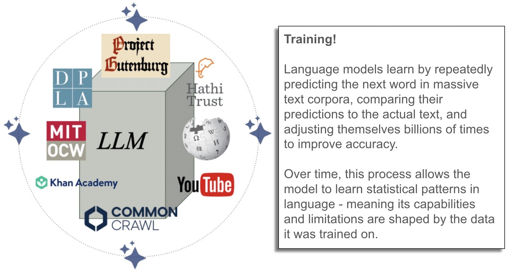
Common Public Data Sources for LLM Training
Most large language models are trained on a combination of publicly available text: web pages, books, forums, open-access scientific literature, news, Wikipedia, code repositories, and video transcripts. Different models use different mixtures, but the shared goal is broad coverage across writing styles, topics, and forms of human communication.
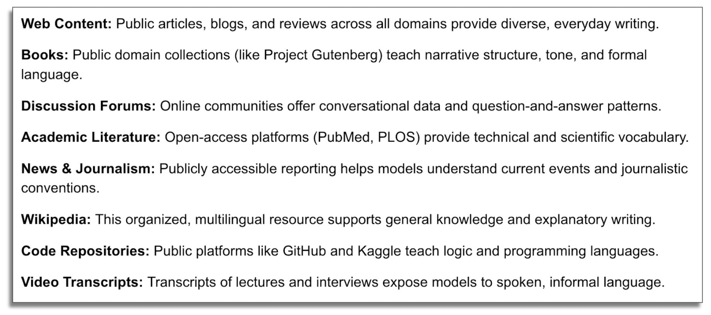
Why Training Takes Enormous Computing Power
Training a large language model requires an almost unimaginable amount of computation - equivalent to performing one billion calculations per second for 100 million years. This is why training is only feasible using enormous clusters of specialized GPU hardware running many operations in parallel rather than one at a time.

Why Only a Few Companies Can Train Frontier LLMs
Building a frontier LLM is not just a software and algorithm problem - it is an engineering and capital problem requiring high-end GPU clusters, massive storage, fast networking, and teams of highly skilled professionals. As a result, only a handful of major companies have the resources to train the most advanced models from scratch, and their choices about data, design, and policy shape the AI tools much of society uses today.

The Frontier Models
Frontier models - including ChatGPT (OpenAI), Gemini (Google), and Claude (Anthropic) - represent the current state of the art in AI, capable of generating fluent text, writing code, analyzing documents, and performing complex reasoning. Their exceptional capabilities stem not just from better algorithms, but from scale: more data, more computing power, and larger model architectures.
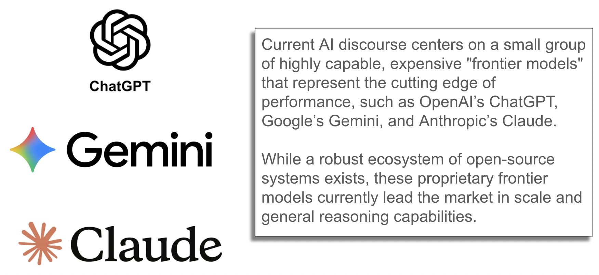
AI Embedded in Everyday Academic Tools
Google Gemini is integrated directly into Google Workspace tools - Gmail, Docs, Sheets, and Drive - bringing frontier AI capabilities into the platforms students and faculty already use for academic work. When accessed through institutional accounts, Gemini operates within enterprise privacy frameworks, helping protect academic data while functioning as an embedded assistant rather than a separate tool.

How Do We Judge or Compare Language Models?
Because multiple competing language models exist, benchmarking provides a standardized way to evaluate and compare them across tasks such as reasoning, writing quality, math, coding, reading comprehension, and factual accuracy. These benchmarks are a snapshot in time - as models grow more capable, they eventually top out on older tests, forcing the industry to continually develop harder ones.

Tokens: The Basic Unit of Language Models
Language models do not process text as full words or sentences - they break input into smaller units called tokens, which may be whole words, parts of words, or individual characters. Tokens are the fundamental unit of measurement for model billing and capacity, and they determine the size of the model’s context window: the number of tokens it can hold in active working memory at one time.
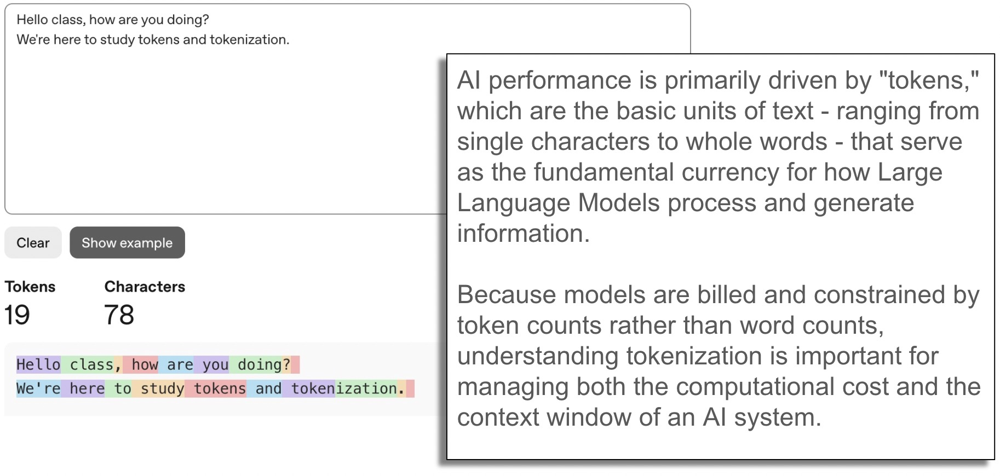
The Context Window
A model’s context window is the total number of tokens it can hold in active working memory while generating a response, encompassing the current prompt, prior conversation, and any provided documents. When this limit is reached, the model does not slow down - it forgets, dropping older information to make room for newer tokens, making efficient use of the context window critical to output quality.

Hallucinations and “Confident Wrongness”
One of the most important limitations of LLMs is their tendency to produce answers that sound authoritative even when they are factually incorrect - a phenomenon called “hallucination.” This occurs not because the model is malfunctioning, but because it is optimized to predict statistically plausible language, not to guarantee factual correctness.
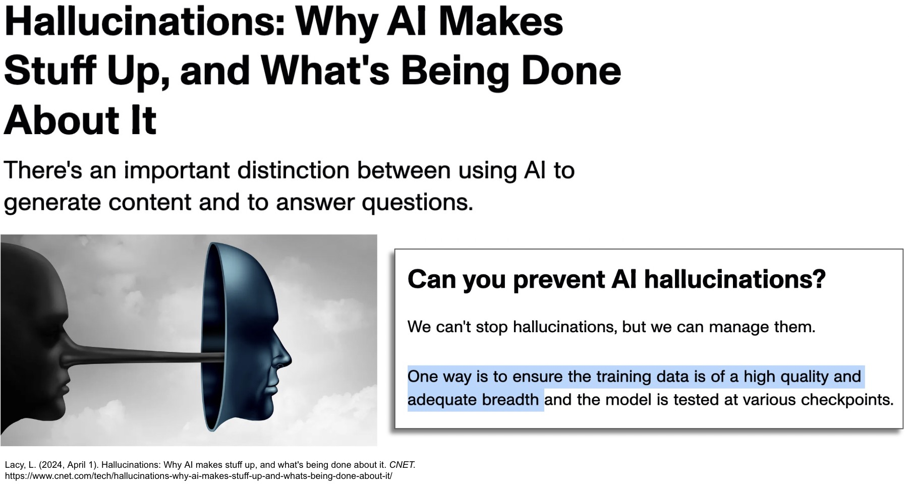

Dynamically Generated Web Content
Much web information is inaccessible to AI training because it exists behind dynamic search interfaces - content generated only in response to a user query, without a stable URL that a crawler can index. Examples include court records, government databases, library catalogs, retail inventories, and transit schedules: information that technically exists online but requires interaction to surface.

Unique File Types: Knowledge in Hard-to-Learn Forms
Even when information is technically online, it may exist in formats difficult for language models to ingest at scale - PDFs, PowerPoint decks, Word documents, spreadsheets, and white papers that are not consistently structured or cleanly indexable. Digitized primary sources such as photographs, oral histories, manuscripts, and archival collections housed in library and museum platforms face similar invisibility to large-scale AI training pipelines.

Paywalled Journalism and High-Quality Web Content
Many of the most credible, carefully edited, and professionally fact-checked sources on the web - major newspapers, investigative journalism outlets, and specialized trade publications - are paywalled and therefore absent from most AI training data. When students ask LLMs questions requiring high-quality reporting, models may fill gaps with weaker substitutes, producing confident-sounding answers built from lower-credibility sources.

Library Databases: Essential Scholarship Beyond the Open Web
Beyond paywalls, some of the most important scholarship - peer-reviewed journals, legal research platforms, business datasets, and citation indexes - exists only in specialized library databases not part of the open web that AI models train on. This gap means the research forming the backbone of academic work may never have been seen by a language model, making library access to curated scholarly resources critically important.
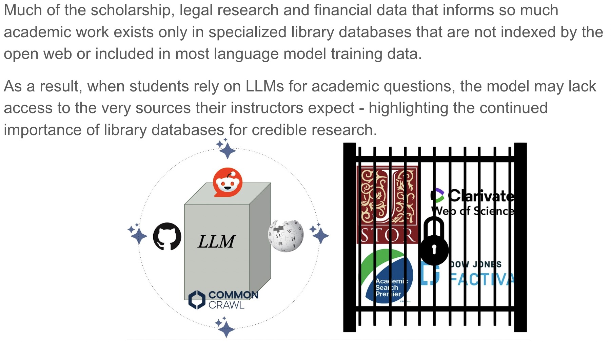
Bias and the Limits of Training Data
Language serves as a repository for human culture and collective bias, and AI systems trained on digitized text absorb the associations present in that data - mathematical proximity encoding historical patterns of representation as statistical fact. This means biases around gender, race, and culture are not incidental errors but structural features baked into the model’s understanding of language, with real-world consequences for how these systems treat and represent people.
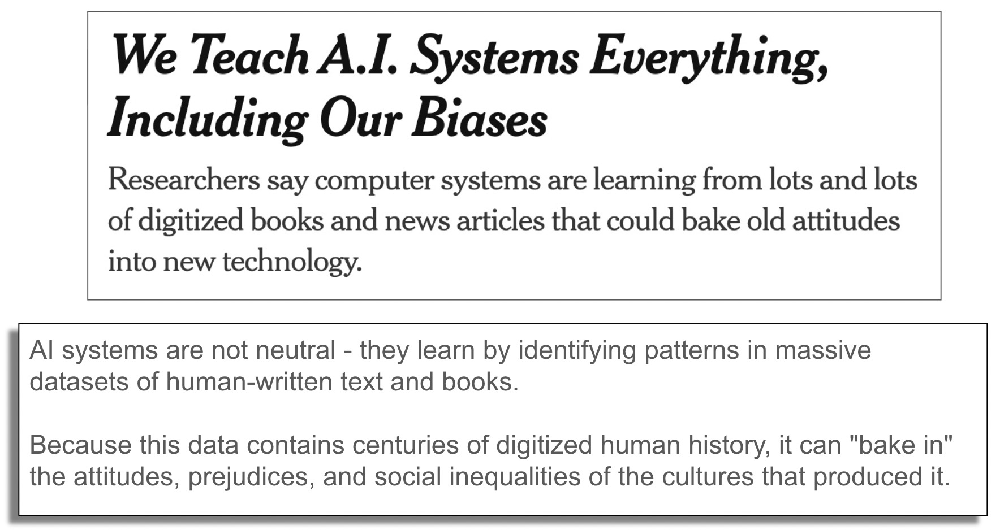
Even the Models Warn You About Their Limitations
The most prominent frontier LLMs all include explicit warnings not to blindly accept their outputs - an admission that these systems can produce authoritative-sounding answers that are incomplete or simply wrong. As recent research suggests, hallucinations may be an unavoidable feature of statistical language modeling, making it essential to develop responsible workflows for using AI in research and scholarship - the focus of the next workshop.